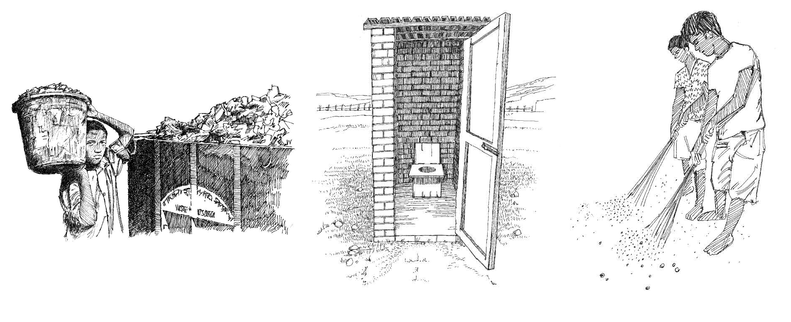

Overview
- Good sanitation is vital to stop the spread of many epidemics, such as diarrhoea and cholera .
- As volunteers, you can encourage members of the community to improve their sanitation by using latrines, disposing of rubbish and removing standing water.
These are the most important sanitation initiatives for preventing disease
- Dispose of excreta (faeces) safely (by constructing latrines).
- Dispose of solid waste and rubbish safely.
- Bury corpses and destroy animal carcasses safely.
- Control disease vectors and protect people from them.
- Incinerate medical waste.
- Drain or remove waste water and standing water. (Camps should be designed with this in mind.)
- Promote hygiene and teach people how to keep themselves safe and clean.

Talk to your community about proper sanitation practices
How do you support good sanitation?
- Promote the construction and use of latrines.
- Encourage the community to burn or bury rubbish.
- Mobilize the community to reduce standing water where mosquitoes are likely to breed.

Safely dispose of waste. Build and properly use latrines. Community clean-up campaign.